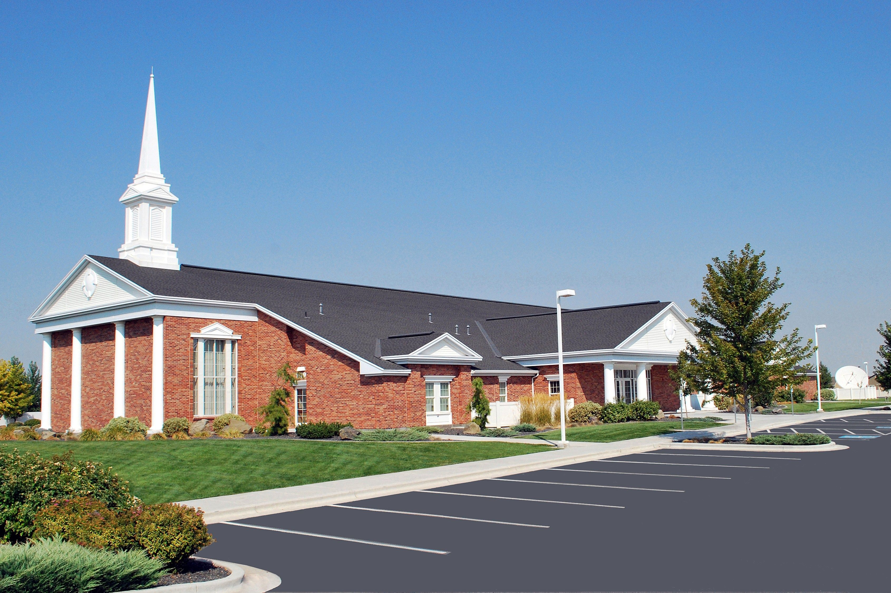
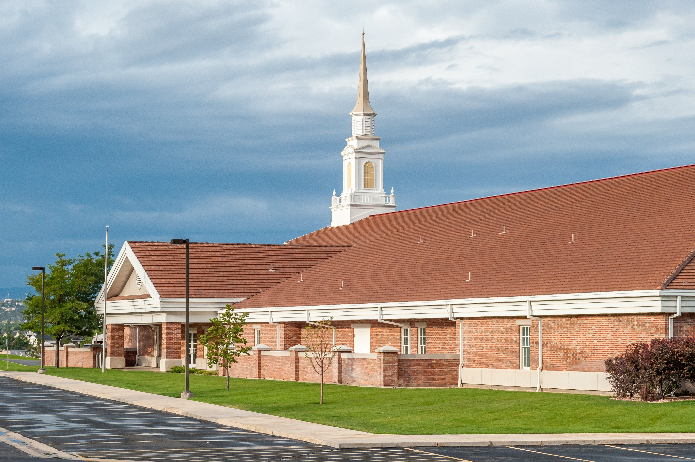

La Iglesia de Jesucristo de los Santos de los Últimos Días
En cada unidad las personas sirven voluntariamente como líderes para organizar la iglesia y ayudar a las personas a aumentar su espiritualidad
La base principal del Distrito está ubicada en la ciudad de Caleta Olivia.

Contactatenos...
La rama Caleta Olivia
Hipólito Irygoyen 2085 - Caleta Olivia
Ver ubicación de la capilla...La rama Pico Truncado
Hipólito Irygoyen 2085 - Pico Truncado
Ver ubicación de la capilla...
La rama las Heras
Hipólito Irygoyen 2085 - Las Heras
Ver ubicación de la capilla...

Contactatenos...
La rama Puerto Deseado
Hipólito Irygoyen 2085 - Puerto Deseado
Ver ubicación de la capilla...